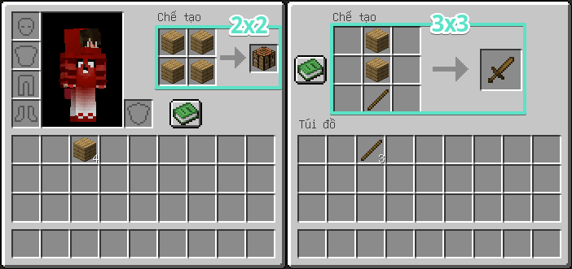

Trong trò chơi Minecraft, chế tạo là thứ căn bản mà ai cũng cần phải biết, nó là phương pháp ghép đồ giúp bạn tìm ra hầu hết các vật phẩm trong game. Có 2 nơi để chế tạo, khung chế tạo 2×2 trong túi đồ (mặc định phím E), giành cho những món đồ đơn giản dễ chế tạo. Thứ 2 là khung chế tạo 3×3 trong bàn chế tạo, giành cho những món đồ mà khung 2×2 không chế được và đương nhiên nó cũng khó hơn nhiều.

Có nhiều bạn hỏi cách chế tạo cánh cứng, đĩa nhạc, yên ngựa,.. vv thì mình xin trả lời là rất tiếc chúng không thể chế tạo được, bạn chỉ có thể tìm thấy chúng ở thành phố kết thúc dưới thế giới kết thúc, hầm mỏ ở các hang động, và còn nhiều nơi khác trên bản đồ của Minecraft!
Và sau đây mình sẽ hướng dẫn chi tiết cách chế tạo cũng như tất cả các công thức chế tạo đồ:


Các công thức chế tạo đồ cơ bản
| Tên | Nguyên liệu | Cách chế tạo | Công dụng |
|---|---|---|---|
| Gỗ | Thân gỗ | Xây dựng nhà cửa hoặc trang trí, các mặt của gỗ đều giống nhau. | |
| Gỗ đã cạo vỏ | Thân cây gỗ đã cạo vỏ | Xây dựng nhà cửa hoặc trang trí, các mặt của gỗ đều bóng bẩy hơn. | |
| Ván gỗ | Thân gỗ | Vật liệu xây dựng cơ bản và cũng là nguyên liệu quan trọng để chế nhiều thứ khác. | |
| Gậy | Ván gỗ | Chế tạo đuốc, mũi tên, hàng rào, tấm biển, dụng cụ và vũ khí. | |
| Đuốc | Than + Gậy | Soi sáng một vùng khi đặt ra và nó cũng làm tan băng chảy tuyết. | |
| Đuốc linh hồn | Than + Gậy + Cát hoặc đất linh hồn | Trang trí và soi sáng. | |
| Bàn chế tạo | Ván gỗ | Mở ra khung chế tạo 3×3. | |
| Lò nung | Đá cuội | Nung nấu các loại thực phẩm và quặng. | |
| Rương | Ván gỗ | Tích trữ đồ, nếu bị phá vỡ sẽ rơi đồ ra ngoài. | |
| Thang | Gậy | Leo trèo lên các khối cao. | |
| Hàng rào | Gậy + Ván gỗ | Ngăn cản quái vật và vật nuôi nhảy qua. | |
| Cổng rào | Ván gỗ + Gậy | Sử dụng như cái cửa, xây chung với hàng rào nhìn rất đẹp và hợp lí. | |
| Thuyền | Ván gỗ Ván gỗ + Xẻng[BE] | Phương tiện đi lại dưới nước. | |
| Thuyền gỗ có rương | Thuyền + Rương | Vận chuyển rương đi lại dưới nước. | |
| Phiến gỗ | Ván gỗ | Vật liệu xây dựng giống như các bậc thang. | |
| Phiến | Đá, đá cuội, gạch đá, cát kết, gạch nether, thạch anh, hoặc cát kết đỏ. | Vật liệu xây dựng giống như các bậc thang. | |
| Tấm biển | Ván gỗ + Gậy | Ghi chú, có thể ghi 4 dòng và mỗi dòng tối đa 15 ký tự . | |
| Cửa gỗ | Ván gỗ | Cửa gỗ có thể mở bằng cách nhấn vào hoặc nút bấm, riêng cửa sắt chỉ có thể mở bằng nút bấm hoặc đá đỏ. |
Các công thức chế tạo các loại khối
| Tên | Nguyên liệu | Cách chế tạo | Công dụng |
|---|---|---|---|
| Đất thô | Đất + Sỏi | Trang trí. | |
| Đá phát sáng | Bột đá phát sáng | Có nguồn sáng tốt hơn đuốc, và có thể đặt dưới nước. | |
| Khối tuyết | Bóng tuyết | Vật liệu xây dựng hoặc tạo ra người tuyết. | |
| TNT | Thuốc súng + Cát | Tạo ra một vụ nổ khi dùng mạch đá đỏ, nút bấm hoặc châm lửa. | |
| Khối đất sét | Đất sét | Vật liệu xây dựng hoặc đốt lên để làm thành gốm. | |
| Gạch | Viên gạch | Vật liệu xây dựng. | |
| Kệ sách | Ván gỗ + Sách | Trang trí và làm tăng khả năng phù phép khi đặt cạnh bàn phù phép. | |
| Cát kết | Cát | Vật liệu xây dựng. | |
| Cát kết mịn | Khối cát kết | Vật liệu xây dựng. | |
| Cát kết được đục | Phiến cát | Vật liệu xây dựng. | |
| Đèn bí ngô | Bí ngô + Đuốc | Có nguồn sáng tốt hơn đuốc, và có thể đặt dưới nước. | |
| Khối đá đỏ | Đá đỏ | Vật liệu xây dựng hệ thống mạch đá đỏ, hoặc gộp lại để tiết kiệm không gian chứa đồ. | |
| Khối ngọc lưu ly | Ngọc lưu ly | Vật liệu xây dựng đèn hiệu, hoặc gộp lại để tiết kiệm không gian chứa đồ. | |
| Khối kim cương | Kim cương | Vật liệu xây dựng đèn hiệu, hoặc gộp lại để tiết kiệm không gian chứa đồ. | |
| Khối vàng | Phôi vàng | Vật liệu xây dựng đèn hiệu, gộp lại để tiết kiệm không gian chứa đồ, hoặc dùng làm nguyên liệu chế tạo. | |
| Khối sắt | Phôi sắt | Vật liệu xây dựng đèn hiệu, gộp lại để tiết kiệm không gian chứa đồ, hoặc dùng làm nguyên liệu chế tạo. | |
| Khối ngọc lục bảo | Ngọc lục bảo | Vật liệu xây dựng đèn hiệu, hoặc gộp lại để tiết kiệm không gian chứa đồ. | |
| Khối than | Than | Vật liệu xây dựng, hoặc gộp lại để đốt lâu hơn hay tiết kiệm không gian chứa đồ. | |
| Khối đồng | Đồng | Vật liệu xây dựng, hoặc gộp lại để tiết kiệm không gian chứa đồ. | |
| Gạch đá | Đá | Vật liệu xây dựng + trang trí. | |
| Cầu thang gỗ | Ván gỗ | Dùng làm bậc thang để lên các nơi cao hoặc trang trí nhà cửa. | |
| Cầu thang đá | Đá cuội, cát kết, gạch, gạch đá, gạch nether, thạch anh, hoặc cát kết đỏ | Dùng làm bậc thang để lên các nơi cao hoặc trang trí nhà cửa. | |
| Tường đá cuội | Đá cuội hoặc đá phủ rêu | Trang trí chuồng chăn nuôi. | |
| Gạch địa ngục | Viên gạch địa ngục | Vật liệu xây dựng. | |
| Khối thạch anh | Thạch anh | Vật liệu xây dựng, trang trí nhà cửa tuyệt đẹp. | |
| Khối thạch anh được đục | Phiến thạch anh | Vật liệu xây dựng, trang trí nhà cửa tuyệt đẹp. | |
| Khối cột trụ thạch anh | Khối thạch anh | Vật liệu xây dựng, trang trí nhà cửa tuyệt đẹp. | |
| Gốm sành màu | Gốm sành + Thuốc nhuộm | Vật liệu xây dựng. | |
| Kiện rơm | Lúa | Vật liệu xây dựng, có thể làm thức ăn cho ngựa, lừa hoặc la. | |
| Đá hoa cương | Đá diorit + Thạch anh | Vật liệu xây dựng + trang trí. | |
| Đá andesit | Đá diorit + Đá cuội | Vật liệu xây dựng + trang trí. | |
| Đá diorit | Đá cuội + Thạch anh | Vật liệu xây dựng + trang trí. | |
| Đá hoa cương được đánh bóng | Đá hoa cương | Vật liệu xây dựng + trang trí. | |
| Đá andesit được đánh bóng | Đá andesit | Vật liệu xây dựng + trang trí. | |
| Đá diorit được đánh bóng | Đá diorit | Vật liệu xây dựng + trang trí. | |
| Khối lăng trụ biển | Mảnh lăng trụ biển | Vật liệu xây dựng + trang trí. | |
| Gạch lăng trụ biển | Mảnh lăng trụ biển | Vật liệu xây dựng + trang trí. | |
| Lăng trụ biển sẫm màu | Mảnh lăng trụ biển + Túi mực | Vật liệu xây dựng + trang trí. | |
| Đèn biển | Tinh thể lăng trụ biển + Mảnh lăng trụ biển | Vật liệu xây dựng + trang trí, nó có thể phát sáng ở dưới nước. | |
| Khối chất nhờn | Bóng nhờn | Đẩy khối khác đi khi sử dụng pít-tông và nảy người chơi lên cao khi họ rơi vào, giống như những chiếc đệm nhún. | |
| Đá cuội phủ rêu | Đá cuội + Dây leo Đá cuội + Khối rêu | Một khối đá có lớp rêu dùng để trang trí nhà cửa. | |
| Gạch đá phủ rêu | Gạch đá + Dây leo Gạch đá + Khối rêu | Một khối đá có lớp rêu dùng để trang trí nhà cửa. | |
| Gạch đá được đục | Phiến gạch đá | Vật liệu xây dựng + trang trí. | |
| Cát kết đỏ | Cát đỏ | Vật liệu xây dựng + trang trí. | |
| Cát kết đỏ mịn | Cát kết đỏ | Vật liệu xây dựng + trang trí. | |
| Cát kết đỏ được đục | Phiến cát kết đỏ | Vật liệu xây dựng + trang trí. | |
| Khối purpur | Quả điệp khúc nở bung | Vật liệu xây dựng chỉ có thể kiếm tại thế giới kết thúc. | |
| Khối cột trụ purpur | Phiến purpur | Vật liệu xây dựng chỉ có thể kiếm tại thế giới kết thúc. | |
| Khối dung nham | Kem dung nham | Mất máu khi bước lên, chống quái vật xâm nhập. | |
| Khối bướu địa ngục | Bướu địa ngục | Vật liệu xây dựng đỏ rực trông khá lạ mắt. | |
| Khối gạch địa ngục đỏ | Bướu địa ngục + Gạch địa ngục | Vật liệu xây dựng. | |
| Khối xương | Bột xương | Dùng để tích trữ bộ xương, hoặc xây dựng theo kiến trúc cổ, xương khủng long… v.v. | |
| Khối tảo bẹ khô | Tảo bẹ khô | Có thể dùng làm nguyên liệu đốt trong lò nung. | |
| Băng nén | Băng | Vật liệu xây dựng rất trơn trượt. | |
| Băng xanh | Băng nén | Vật liệu xây dựng rất trơn trượt. | |
| Khối mật ong | Chai mật ong | Vật liệu xây dựng có chất dính vì thế có thể dùng làm thang. | |
| Khối sáp ong | Sáp ong | Vật liệu xây dựng. | |
| Tổ ong nhân tạo | Ván gỗ + Sáp ong | Nuôi ong lấy mật, có tối đa 5 lần lấy mật khi mỗi chú ong thu phấn về tổ. | |
| Đá bazan được đánh bóng | Đá bazan | Vật liệu xây dựng + trang trí. | |
| Đá đen được đánh bóng | Đá đen | Vật liệu xây dựng + trang trí. | |
| Gạch đá đen được đánh bóng | Đá đen được đánh bóng | Vật liệu xây dựng + trang trí. | |
| Cầu thang đá đen | Các loại đá đen | Vật liệu xây dựng + trang trí. | |
| Tường đá đen | Các loại đá đen | Vật liệu xây dựng + trang trí. | |
| Phiến đá đen | Các loại đá đen | Vật liệu xây dựng + trang trí. | |
| Đá đen được đánh bóng được đục | Phiến đá đen được đánh bóng | Vật liệu xây dựng + trang trí. | |
| Khối Netherit | Phôi Netherit | Vật liệu xây dựng đèn hiệu, gộp lại để tiết kiệm không gian chứa đồ, hoặc dùng làm tường chống nổ vì nó rất cứng. | |
| Khối đồng bôi sáp | Khối đồng + Sáp ong | Vật liệu xây dựng + trang trí. | |
| Khối đồng được cắt | Khối đồng | Vật liệu xây dựng + trang trí. | |
| Cầu thang đồng được cắt | Khối đồng được cắt | Vật liệu xây dựng + trang trí. | |
| Cầu thang đồng được cắt và bôi sáp | Khối đồng được cắt hoặc bôi sáp | Vật liệu xây dựng + trang trí. | |
| Phiến đồng được cắt | Các loại phiến đồng được cắt. | Vật liệu xây dựng + trang trí. | |
| Phiến đồng được cắt và bôi sáp | Phiến đồng được cắt và bôi sáp. | Vật liệu xây dựng + trang trí. | |
| Đá bảng sâu được đánh bóng | Đá cuội bảng sâu | Vật liệu xây dựng + trang trí. | |
| Gạch đá bảng sâu | Đá bảng sâu đánh bóng | Vật liệu xây dựng + trang trí. | |
| Đá lát bảng sâu | Gạch đá bảng sâu | Vật liệu xây dựng + trang trí. | |
| Cầu thang đá bảng sâu | Các loại đá cuội bảng sâu | Vật liệu xây dựng + trang trí. | |
| Tường đá bảng sâu | Các loại đá cuội bảng sâu | Vật liệu xây dựng + trang trí. | |
| Phiến đá bảng sâu | Các loại đá cuội bảng sâu | Vật liệu xây dựng + trang trí. | |
| Đá bảng sâu được đục | Phiến đá cuội bảng sâu | Vật liệu xây dựng + trang trí. | |
| Khối thạch anh tím | Mảnh thạch anh tím | Vật liệu xây dựng + trang trí. Phát ra âm thanh khi bước lên, dùng làm nhạc cụ với khối nốt nhạc. | |
| Thủy tinh mờ | Mảnh thạch anh tím + Thủy tinh | Ngăn chặn ánh sáng xuyên qua nhưng vẫn trong suốt như kính. | |
| Khối thạch nhũ | Thạch nhũ nhọn | Vật liệu xây dựng + trang trí, khi có nước hoặc dung nham phía trên sẽ nhỏ giọt xuống dưới. | |
| Bùn nén | Bùn + Lúa mì | Trang trí và chế tạo gạch bùn. | |
| Gạch bùn | Bùn nén | Vật liệu xây dựng + trang trí. | |
| Cầu thang gạch bùn | Gạch bùn | Vật liệu xây dựng + trang trí. | |
| Tường gạch bùn | Gạch bùn | Vật liệu xây dựng + trang trí. | |
| Phiến gạch bùn | Gạch bùn | Vật liệu xây dựng + trang trí. | |
| Rễ cây đước ngấm bùn | Bùn + Rễ cây đước | Vật liệu xây dựng + trang trí. | |
| Khối đồng thô | Đồng thô | Tích trữ đồng thô. | |
| Khối sắt thô | Sắt thô | Tích trữ sắt thô. | |
| Khối vàng thô | Vàng thô | Tích trữ vàng thô. | |
| Khối tre | Cây tre | Trang trí nhà cửa và chế tạo ra ván gỗ tre. | |
| Khảm tre | Phiến tre | Vật liệu xây dựng + trang trí. | |
| Phiến khảm tre | Khảm tre | Vật liệu xây dựng + trang trí. | |
| Cầu thang khảm tre | Khảm tre | Vật liệu xây dựng + trang trí. | |
| Đèn đồng | Đồng+ Gậy quỷ lửa + Đá đỏ | Vật liệu xây dựng + trang trí, có thể soi sáng. | |
| Đèn đồng được bôi sáp | Đèn đồng + Sáp ong | Vật liệu xây dựng + trang trí. | |
| Khối đồng được đục | Phiến đồng được cắt | Vật liệu xây dựng + trang trí. | |
| Khối đồng được đục bôi sáp | Khối đồng được đục + Sáp ong | Vật liệu xây dựng + trang trí. | |
| Lưới đồng | Khối đồng | Vật liệu xây dựng + trang trí, có dạng lưới. | |
| Đá túp được đánh bóng | Đá túp | Vật liệu xây dựng + trang trí. | |
| Gạch đá túp | Đá túp được đánh bóng | Vật liệu xây dựng + trang trí. | |
| Cầu thang đá túp | Đá túp được đánh bóng hoặc gạch đá túp | Vật liệu xây dựng + trang trí. | |
| Tường đá túp | Đá túp được đánh bóng hoặc gạch đá túp | Vật liệu xây dựng + trang trí. | |
| Phiến đá túp | Đá túp được đánh bóng hoặc gạch đá túp | Vật liệu xây dựng + trang trí. | |
| Đá túp được đục | Phiến đá túp hoặc gạch đá túp | Vật liệu xây dựng + trang trí. | |
| Khối nhựa cây | Nhựa cây | Vật liệu xây dựng + trang trí, hoặc dùng để chế tạo trái tim quái cọt kẹt. | |
| Gạch nhựa cây | Viên gạch nhựa cây | Vật liệu xây dựng + trang trí. | |
| Cầu thang gạch nhựa cây | Gạch nhựa cây | Vật liệu xây dựng + trang trí. | |
| Tường gạch nhựa cây | Gạch nhựa cây | Vật liệu xây dựng + trang trí. | |
| Phiến gạch nhựa cây | Gạch nhựa cây | Vật liệu xây dựng + trang trí. | |
| Gạch nhựa cây được đục | Phiến gạch nhựa cây | Vật liệu xây dựng + trang trí. |
Các công thức chế tạo dụng cụ
| Tên | Nguyên liệu | Cách chế tạo | Công dụng |
|---|---|---|---|
| Cúp | Gậy + Ván gỗ, đá cuội, sắt, vàng, kim cương | Đào đá nhanh hơn và tùy loại khoáng sản mà cần có loại cúp “thích hợp”. | |
| Rìu | Gậy + Ván gỗ, đá cuội, sắt, vàng, kim cương | Dùng để chặt gỗ, cũng thể làm vũ khí tấn công. | |
| Xẻng | Gậy + Ván gỗ, đá cuội, sắt, vàng, kim cương | Đào cát, sỏi, đất, và tuyết nhanh hơn. | |
| Cuốc | Gậy + Ván gỗ, đá cuội, sắt, vàng, kim cương | Dùng cuốc cuốc đất để trồng cây. | |
| Cần câu cá | Gậy + Sợi chỉ | Đánh bắt cá. | |
| Cần câu cá rốt | Cần câu + Cà rốt | Điều khiển heo khi cưỡi. | |
| Cần câu gắn nấm kì dị | Cần câu + Nấm kì dị | Điều khiển kẻ sải bước khi cưỡi. | |
| Dụng cụ đánh lửa | Phôi sắt + Đá lửa | Châm lửa. | |
| La bàn | Phôi sắt + Đá đỏ | Định hướng nơi hồi sinh. | |
| La bàn hồi phục | Mảnh âm vang + La bàn | Định hướng nơi vừa chết. | |
| Đồng hồ | Phôi vàng + Đá đỏ | Xem thời gian ngày đêm, biết được sắp tối hay chưa để chống lại bọn quái vật. | |
| Xô | Phôi sắt | Múc nước, dung nham hoặc đựng sữa bò. | |
| Kéo tỉa | Phôi sắt | Cắt len cừu hoặc cắt lá. | |
| Túi bọc | Da thuộc + Sợi chỉ | Đựng đồ có thể mang trên người rất tiện. | |
| Túi bọc màu | Túi bọc + Bột nhuộm | Nhiều màu sắc khác nhau để dễ quản lý vật phẩm. | |
| Ống nhòm | Đồng + Mảnh thạch anh tím | Chuột-phải phóng to để quan sát vật ở xa. | |
| Chổi quét | Lông + Đồng + Gậy | Tìm kho báu trong cát đáng ngờ và sỏi đáng ngờ, 4.8 giây (96 ticks) cho mỗi lần quét. |
Các công thức chế tạo vũ khí và giáp
| Tên | Nguyên liệu | Cách chế tạo | Công dụng |
|---|---|---|---|
| Mũ | Da thuộc, sắt, vàng, kim cương | Bảo vệ đầu. Tăng 1,5 giáp khi trang bị. | |
| Áo | Da thuộc, sắt, vàng, kim cương | Bảo vệ thân. Tăng 4 giáp khi trang bị. | |
| Quần | Da thuộc, sắt, vàng, kim cương | Bảo vệ đùi và chân. Tăng 3 giáp khi trang bị. | |
| Giày | Da thuộc, sắt, vàng, kim cương | Bảo vệ bàn chân. Tăng 1,5 giáp khi trang bị. | |
| Kiếm | Gậy + ván gỗ, đá cuội, đồng, sắt, vàng, kim cương | Vũ khí tấn công. | |
| Chùy | Lõi nặng + Que gió | Vũ khí tấn công, để gây sát thương tối đa cần nhảy từ trên cao để tạo ra cú đập. Độ rơi càng cao sát thương của cú đập càng lớn. | |
| Giáo | Gậy + ván gỗ, đá cuội, đồng, sắt, vàng, kim cương | Lao tới để tấn công, tốc độ càng nhanh cú lao càng mạnh. | |
| Khiên | Sắt + Ván gỗ | Đỡ đòn đánh của đối phương. | |
| Khiên màu | Khiên + Lá cờ | Nếu là cờ có biểu tượng chúng sẽ gộp vào nhau. | |
| Cung | Sợi chỉ + Gậy | Bắn mũi tên. | |
| Mũi tên | Đá lửa + Gậy + Lông gà | Làm đạn dược cho cung. | |
| Giáp ngựa | Da thuộc | Tăng sức chống chịu cho ngựa, lừa và con la. Tuy nhiên, không thể trang bị cho ngựa xương và ngựa thây ma. | |
| Mũi tên ma quỷ | Mũi tên + Đá phát sáng | Mũi tên bắn trúng sẽ gây hiệu ứng “Phát sáng” lên kẻ địch. | |
| Mũi tên hiệu ứng | Mũi tên + Thuốc kéo dài (phụ thuộc hiệu ứng của thuốc) | Mũi tên bắn trúng sẽ gây hiệu ứng tương đương với thuốc chế tạo. VD: Chế tạo thuốc lửa sẽ bắn ra mũi tên lửa, độc sẽ ra độc, … vân vân. | |
| Mai rùa | Vảy | Chiếc mũ siêu cấp cute, cung cấp cho người chơi hiệu ứng “Thở dưới nước”. | |
| Nỏ | Gậy + Sắt + Sợi chỉ + Móc dây bẫy | Dùng để bắn mũi tên. | |
| Giáp chó sói | Vảy tatu | Tăng giáp cho chó sói, giáp này mạnh đến mức có thể đỡ 3 đòn tấn công của cai ngục. |
Các công thức chế tạo máy móc
| Tên | Nguyên liệu | Cách chế tạo | Công dụng |
|---|---|---|---|
| Tấm cảm biến áp lực | Ván gỗ hoặc Đá hoặc Đá đen được đánh bóng | Gửi một tín hiệu đến cửa hoặc mạch đá đỏ khi có bất kì vật gì đè lên. | |
| Tấm cảm biến trọng lực nặng & nhẹ | Phôi vàng hoặc phôi sắt | Gửi tín hiệu điện đến khu vực xung quanh khi có vật thả trên tấm, tín hiệu càng mạnh khi có càng nhiều vật thả trên. | |
| Cửa sập gỗ | Ván gỗ | Một cái cửa có thể nằm ngang, mở bằng cách nhấn vào, dùng nút bấm hoặc sử dụng mạch đá đỏ. | |
| Cửa sập sắt | Phôi sắt | Cửa sập chỉ có thể mở bằng tín hiệu điện. | |
| Cửa sập đồng | Phôi đồng | Trong chế độ chơi khó, gió có thể mở cửa sập này. | |
| Nút bấm | Ván gỗ hoặc Đá hoặc Đá đen được đánh bóng | Gửi một tín hiệu ngắn khi nhấn vào. | |
| Cần gạt | Gậy + Đá cuội | Có thể tùy chỉnh tín hiệu bật hoặc tắt. | |
| Đuốc đá đỏ | Gậy + Đá đỏ | Có thể gửi tín hiệu đến cửa, mạch đá đỏ, pít-tông… Tuy nhiên khi có tín hiệu khác đè lên nó sẽ bị tắt. | |
| Hộp chơi nhạc | Ván gỗ + Kim cương | Chơi đĩa nhạc. | |
| Khối nốt nhạc | Ván gỗ + Đá đỏ | Phát ra một nốt nhạc khi bấm chuột-trái. | |
| Phễu | Phôi sắt + Rương | Tự động di chuyển vật phẩm trong rương, máy thả, máy phân phát,… khi đặt dưới chúng. | |
| Pít-tông | Ván gỗ + Đá cuội + Sắt + Đá đỏ | Đẩy các khối trước mặt khi có tín hiệu gửi đến. | |
| Pít-tông dính | Pít-tông + Bóng nhờn | Giống như pít-tông như có thể đẩy và kéo lại. | |
| Xe mỏ | Phôi sắt | Phương tiện đi lại trên đường ray. | |
| Xe mỏ có lò nung | Xe mỏ + Lò nung | Đẩy xe mỏ khác trên đường ray khi chuột-phải. | |
| Xe mỏ có rương | Xe mỏ + Rương | Vận chuyển đồ theo đường ray. | |
| Xe mỏ có phễu | Phễu + Xe mỏ | Có chức năng giống hệt như phễu, thường dùng để vận chuyển đồ. | |
| Xe mỏ có tnt | TNT + Xe mỏ | Xe mỏ sẽ nổ khi đi trên đường ray cảm biến. | |
| Đường ray | Phôi sắt + Gậy | Làm đường ray cho xe mỏ. | |
| Đường ray tăng tốc | Phôi vàng + Gậy + Đá đỏ | Tăng tốc độ chạy của xe mỏ. | |
| Đường ray cảm biến | Phôi sắt + Tấm áp lực bằng đá + Đá đỏ | Gửi một tín hiệu điện quanh đó xe mỏ đi ngang. | |
| Đèn đá đỏ | Đá đỏ + Đá phát sáng | Phát sáng khi có tín hiệu gửi đến. | |
| Móc dây bẫy | Phôi sắt + Gậy + Ván gỗ | Kích hoạt một tín hiệu khi có vật vấp phải dây giăng bẫy. | |
| Đường ray kích hoạt | Phôi sắt + Gậy + Đuốc đá đỏ | Kích hoạt xe mỏ chở tnt và xe mỏ chở phễu. | |
| Cảm biến ánh sáng | Thủy tinh + Thạch anh + Phiến gỗ | Phát ra tín hiệu vào ban ngày. | |
| Máy thả | Đá cuội + Đá đỏ | Thả một vật phẩm khi có tín hiệu gửi đến. | |
| Máy phân phát | Đá cuội + Cung + Đá đỏ | Bắn một vật phẩm trong máy sau mỗi lần kích hoạt. | |
| Bộ lặp đá đỏ | Đá + Đuốc đá đỏ + Đá đỏ | Nối mạch đá đỏ, có 3 mức để tùy chỉnh nhanh hay chậm, chuột phải để chỉnh. | |
| Mạch so sánh đá đỏ | Đuốc đá đỏ + Đá + Thạch anh | Được dùng trong mạch đá đỏ. | |
| Rương bị kẹt | Rương + Móc dây bẫy | Phát ra một tín hiệu khi rương bị mở. | |
| Khối theo dõi | Đá cuội + Đá đỏ + Thạch anh | Phát ra tín hiệu khi khối đối diện thay đổi. | |
| Bia bắn | Đá đỏ + Kiện rơm | Phát ra tín hiệu khi bị bắn bởi cung tên, trứng gà hoặc tuyết. | |
| Ống dẫn | Vỏ ốc anh vũ + Trái tim biển cả | Khi ở gần sẽ nhận được hiệu ứng “Sức mạnh thủy triều”. Hiệu ứng cung cấp cho bạn oxy liên tục khi ở dưới nước, và chỉ hoạt động khi có nước. | |
| Cột thu lôi | Đồng | Bảo vệ nhà bằng gỗ trong trường hợp sét đánh, ngoài ra nó cũng phát tín hiệu đá đỏ khi xuất hiện. | |
| Cảm biến Sculk được hiệu chỉnh | Mảnh thạch anh tím + Cảm biến Sculk | Giống cảm biến Sculk nhưng gấp đôi phạm vi. | |
| Máy chế tạo | Sắt + Đá đỏ + Máy thả + Bàn chế tạo | Tự động chế tạo đồ theo công thức, kích hoạt bằng mạch đá đỏ. |
Các công thức chế tạo thức ăn
| Tên | Nguyên liệu | Cách chế tạo | Công dụng |
|---|---|---|---|
| Cái bát | Ván gỗ | Dùng để chứa súp, chế tạo ra các loại súp. | |
| Súp nấm | Bát + Nấm đỏ + Nấm nâu | Phục hồi 3 . | |
| Bánh mì | Lúa | Phục hồi 2,5 . | |
| Táo vàng | Táo + Thỏi vàng | Phục hồi 2 và nhận được hiệu ứng hấp thụ, hồi phục. | |
| Đường | Cây mía Chai mật ong | Chế tạo các loại bánh. | |
| Bánh ngọt | Sữa + Đường + Trứng + Lúa | Phục hồi 1 , có thể dùng 6 lần. | |
| Bánh quy | Lúa + Hạt ca cao | Phục hồi 1 . | |
| Dưa hấu | Miếng dưa hấu | Lưu trữ dưa hấu. | |
| Hạt dưa hấu | Miếng dưa hấu | Trồng dưa hấu. | |
| Hạt bí ngô | Bí ngô | Trồng bí ngô. | |
| Cà rốt vàng | Cà rốt + Hạt vàng | Phục hồi 3 hoặc dùng làm nguyên liệu chế thuốc. | |
| Bánh bí ngô | Bí ngô + Trứng + Đường | Phục hồi 4 . | |
| Súp thỏ | Nấm + Cái bát + Thịt thỏ chín + Cà rốt + Khoai tây chín | Phục hồi 5 . | |
| Súp đáng ngờ | Nấm nâu + Nấm đỏ + Cái bát + Anh túc | Phục hồi 3 cho hiệu ứng ngẫu nhiên. | |
| Súp củ dền | Củ dền + Cái bát | Phục hồi 3 . | |
| Chai mật ong | Chai thủy tinh + Khối mật ong | Phục hồi 3 và loại bỏ hiệu ứng độc tố. | |
| Tảo bẹ khô | Khối tảo bẹ khô | Phục hồi 1 . |
Các công thức chế tạo đồ thông dụng
| Tên | Nguyên liệu | Cách chế tạo | Công dụng |
|---|---|---|---|
| Giường | Ván gỗ + Len | Vào ban đêm, ngủ để sáng luôn. | |
| Tranh vẽ | Gậy + Len | Trang trí. | |
| Giấy | Cây mía | Tạo ra bản đồ và sách. | |
| Sách | Giấy + Da thuộc | Làm nguyên liệu để chế tạo nhiều thứ khác. | |
| Sách và bút lông | Sách + Lông + Túi mực | Ghi nhật ký. | |
| Bản đồ trống | Giấy + La bàn
Giấy[PE] | Ghi lại bản đồ chỗ đang đứng, để đánh dấu vị trí dùng bàn vẽ bản đồ. | |
| Tấm thủy tinh | Thủy tinh | Làm vật liệu trang trí. | |
| Hàng rào sắt | Phôi sắt | Làm hàng rào, nhưng có thể nhảy qua. | |
| Cửa sắt | Phôi sắt | Bảo vệ căn nhà khỏi những con quái vật và chỉ có thể mở bằng đá đỏ, cần gạt hoặc nút bấm. | |
| Cửa đồng | Phôi đồng | Bảo vệ căn nhà khỏi những con quái vật. Cánh cửa tự mở khi có cơn gió thổi trong chế độ chơi khó. | |
| Cửa đồng được bôi sáp | Cửa đồng + Sáp ong | ||
| Phôi vàng | Hạt vàng | Làm khối vàng để trang trí hoặc chế tạo nhiều vật phẩm khác. | |
| Hàng rào gạch địa ngục | Gạch địa ngục | Làm hàng rào, cản quái vật và vật nuôi nhảy qua. | |
| Mắt của Ender | Ngọc Ender + Bột quỷ lửa | Tìm pháo đài hoặc chế tạo rương Ender. | |
| Bàn phù phép | Sách + Kim cương + Hắc diện thạch | Dùng để phù phép giáp, vũ khí và dụng cụ, cần có ngọc lưu ly và điểm kinh nghiệm. | |
| Quả cầu lửa | Bột quỷ lửa + Than + Thuốc súng | Đặt vào máy phân phát để bắn. | |
| Quả cầu gió | Que gió | Có thể ném để bay lên không trung, và có thể kích hoạt tín hiệu đá đỏ, nút bấm, tấm cảm biến áp lực… v.v | |
| Rương Ender | Hắc diện thạch + Mắt của Ender | Lưu trữ đồ ở không gian thứ 3 và có thể vào không gian thứ 3 ở bất cứ đâu chỉ cần có rương Ender. | |
| Đèn hiệu | Thủy tinh + Hắc diện thạch + Sao địa ngục | Buff hiệu ứng tạm thời khi được đặt trên kim tự tháp bằng khối kim cương, lục bảo, vàng hoặc sắt. | |
| Cái đe | Khối sắt + Phôi sắt | Sửa chữa và phù phép trang bị. | |
| Chậu hoa | Viên gạch | Làm chậu đựng hoa. | |
| Khung vật phẩm | Gậy + Da thuộc | Treo đồ hoặc khối lên trên tường. | |
| Khung vật phẩm phát sáng | Khung vật phẩm + túi mực phát sáng | Treo đồ hoặc khối lên trên tường. | |
| Pháo hoa | Giấy + Bông pháo hoa + Thuốc súng | Bay lên trời và nổ, càng nhiều thuốc súng càng bay cao. | |
| Bông pháo hoa | Thuốc súng + Bột nhuộm + Nguyên liệu phụ (tùy chọn) | Nguyên liệu tạo ra pháo hoa, hình thù nổ ra sẽ quyết định vào nguyên liệu phụ, hoặc nếu không có nguyên liệu phụ sẽ nổ như pháo hoa bình thường. | |
| Dây dẫn | Sợi chỉ + bóng nhờn Sợi chỉ [1.21.6 trở lên] | Buộc và dắt vật nuôi. | |
| Thảm | Len | Làm nền, trang trí. | |
| Thảm rêu | Khối rêu | Làm nền, trang trí. | |
| Thủy tinh nhuộm | Thủy tinh + Bột nhuộm | Xây dựng, trang trí. | |
| Da thuộc | Da thỏ | Chế tạo quần áo và một số thứ khác. | |
| Lá cờ | Gậy + Len | Trang trí. | |
| Kệ treo đồ | Gậy + phiến đá mịn | Trưng bày quần áo. | |
| Thanh gậy end | Gậy quỷ lửa + Quả điệp khúc nở bung | Dùng để trang trí, có thể phát sáng. | |
| Pha lê End | Thủy tinh + Mắt của Ender + Nước mắt ma địa ngục | Tìm thấy ở dưới thế giới kết thúc. | |
| Hạt sắt | Thỏi sắt | Dùng để chế tạo nhiều thứ khác. | |
| Hạt vàng | Thỏi vàng | Dùng để chế tạo nhiều thứ khác. | |
| Bột bê tông trắng | Bột xương + Cát + Sỏi | Biến thành bê tông khi tiếp xúc với nước hoặc dung nham. | |
| Lửa trại | Gậy + Thân gỗ + Than | Trang trí và có thể nấu đồ ăn. | |
| Lửa trại linh hồn | Gậy + Thân gỗ + Cát linh hồn | Trang trí và có thể nấu đồ ăn. | |
| Giàn giáo | Cây tre + Sợi chỉ | Dùng để leo trèo. | |
| Thùng | Ván gỗ + Phiến gỗ | Dùng để lưu trữ vật phẩm. | |
| Lò luyện kim | Sắt + Lò nung + Đá mịn | Nung nấu quặng nhanh hơn lò nung. | |
| Lò hun khói | Lò nung + Thân gỗ | Nung nấu đồ ăn nhanh hơn lò nung. | |
| Bàn vẽ bản đồ | Giấy + Ván gỗ | Dùng để vẽ bản đồ to hơn và khóa bản đồ. | |
| Thùng ủ phân | Hàng rào gỗ + Ván gỗ | Dùng để ủ cây trồng hoặc hạt giống thành bột xương. | |
| Bàn làm cung tên | Đá lửa + Ván gỗ | Trang trí, được dùng làm bia tập bắn cung và tìm thấy trong làng. | |
| Bàn rèn | Sắt + Ván gỗ | Dùng để nâng cấp đồ, thường tìm thấy trong làng. | |
| Máy cắt đá | Sắt + Đá | Dùng để cắt đá thành cầu thang đá, phiến đá ,… vân vân, đỡ mắc công chế tạo. | |
| Đá mài | Gậy + Phiến đá + Ván gỗ | Sửa chữa vũ khí và dụng cụ, cũng có thể xóa phù phép. | |
| Đèn lồng | Hạt sắt + Đuốc | Trang trí và soi sáng. | |
| Đèn linh hồn | Hạt sắt + Đuốc linh hồn | Trang trí và soi sáng. | |
| Bục để sách | Phiến gỗ + Kệ sách | Dùng để trưng bày sách đã viết. | |
| Khung cửi | Sợi chỉ + Ván gỗ | Dùng để trang trí lá cờ. | |
| Phôi Netherit | Vụn Netherit + Phôi vàng | Nguyên liệu dùng trong bàn rèn để tạo dụng cụ, vũ khí và trang bị Netherit. | |
| Liền chuỗi | Hạt sắt + Phôi sắt | Dùng để trang trí chuông hoặc đèn lồng. | |
| Neo hồi sinh | Hắc diện thạch khóc + Đá phát sáng | Dùng để tạo điểm hồi sinh tại thế giới địa ngục. | |
| Đá nam châm | Gạch đá được đục + Phôi Netherit Gạch đá được đục + Phôi sắt [1.21.5 trở lên] | La bàn sẽ luôn hướng về khối này nếu khối này được đặt ra. | |
| Nến | Sáp ong + sợi chỉ | Thắp sáng. | |
| Nến màu | Nến + bột nhuộm màu | Thắp sáng. | |
| Hộp Shulker | Vỏ Shulker + Rương | Di chuyển vật phẩm bên trong chiếc rương, tựa như một cái rương di động. | |
| Đĩa nhạc 5 | Mảnh vỡ đĩa nhạc | Phát nhạc ‘5’ của Samuel Åberg. | |
| Đồng thô | Khối đồng thô | Nung nấu để tạo ra đồng. | |
| Sắt thô | Khối sắt thô | Nung nấu để tạo ra sắt. | |
| Vàng thô | Khối vàng thô | Nung nấu để tạo ra vàng. | |
| Tấm biển treo | Thân gỗ đã cạo vỏ + Dây xích | Ghi chú, treo theo hướng thẳng của khối. | |
| Chậu được trang trí | Mảnh gốm hoặc Viên gạch | Trang trí. | |
| Kệ sách được đục | Ván gỗ + Phiến gỗ | Đựng được 6 cuốn sách, kể cả sách phù phép. | |
| Trái tim quái cọt kẹt | Gỗ sồi nhợt + Khối nhựa cây | Triệu hồi quái cọt kẹt vào ban đêm. | |
| Ghast khô | Nước mắt Ghast + Cát linh hồn | Đặt vào khối nước, một lát sau sẽ hút nước dần và biến thành Ghast vui vẻ. | |
| Yên cương | Da thuộc + Thủy tinh + Len Yên cương (màu bất kỳ) + Bột nhuộm | Dùng để cưỡi Ghast vui vẻ. |
Các công thức chế tạo mẫu rèn
| Tên | Nguyên liệu | Cách chế tạo | Công dụng |
|---|---|---|---|
| Nâng cấp Netherit | Kim cương + Nâng cấp Netherit + Netherrack | Dùng nâng cấp đồ kim cương lên Netherit trong bàn rèn. Cách dùng xem tại đây. | |
| Trang trí giáp kiểu lính gác | Kim cương + Kiểu lính gác + Đá cuội | ||
| Trang trí giáp kiểu hồn ma bay | Kim cương + Kiểu hồn ma bay + Đá cuội | ||
| Trang trí giáp kiểu bờ biển | Kim cương + Kiểu bờ biển + Đá cuội | ||
| Trang trí giáp kiểu hoang dã | Kim cương + Kiểu hoang dã + Đá cuội phủ rêu | ||
| Trang trí giáp kiểu đụn cát | Kim cương + Kiểu đụn cát + Cát kết | ||
| Trang trí giáp kiểu người dò đường | Kim cương + Kiểu dò đường + Đất nung | ||
| Trang trí giáp kiểu người chăn nuôi | Kim cương + Kiểu chăn nuôi + Đất nung | ||
| Trang trí giáp kiểu thợ nặn | Kim cương + Kiểu thợ nặn + Đất nung | ||
| Trang trí giáp kiểu người chủ | Kim cương + Kiểu người chủ + Đất nung | ||
| Trang trí giáp kiểu lộ thiên | Kim cương + Kiểu lộ thiên + Đá cuội bảng sâu | ||
| Trang trí giáp kiểu im lặng | Kim cương + Kiểu im lặng + Đá cuội bảng sâu | ||
| Trang trí giáp kiểu thủy triều | Kim cương + Kiểu thủy triều + Lăng trụ biển | ||
| Trang trí giáp kiểu mũi heo | Kim cương + Kiểu mũi heo + Đá đen | ||
| Trang trí giáp kiểu xương gọng | Kim cương + Kiểu xương gọng + Netherrack | ||
| Trang trí giáp kiểu con mắt | Kim cương + Kiểu con mắt + Đá End | ||
| Trang trí giáp kiểu xoắn ốc | Kim cương + Kiểu xoắn ốc + Khối purpur | ||
| Trang trí giáp kiểu làn gió | Kim cương + Kiểu làn gió + Que gió | ||
| Trang trí giáp kiểu sét | Kim cương + Kiểu sét + Khối đồng |
Các công thức chế tạo bột nhuộm
| Tên | Nguyên liệu | Cách chế tạo | Công dụng |
|---|---|---|---|
| Bột xương | Xương | Giúp cây trồng tăng trưởng nhanh chóng hoặc làm nhẹ màu bột nhuộm. | |
| Bột nhuộm trắng | Linh lan, Bột xương | Làm đổi màu trắng. | |
| Bột nhuộm xám nhạt | Thiến thảo xanh, Cúc trắng, Uất kim hương trắng, Bột nhuộm trắng + Bột nhuộm xám, Bột nhuộm đen + Bột nhuộm trắng | Làm đổi màu xám nhạt. | |
| Bột nhuộm xám | Bột xương + Túi mực | Làm đổi màu xám. | |
| Bột nhuộm đen | Hoa hồng Wither, Túi mực | Làm đổi màu đen. | |
| Bột nhuộm nâu | Hạt ca cao | Làm đổi màu nâu. | |
| Bột nhuộm đỏ | Anh túc, Uất kim hương đỏ, Hoa hồng | Làm đổi màu đỏ. | |
| Bột nhuộm cam | Bột nhuộm vàng + Bột nhuộm đỏ, Uất kim hương cam | Làm đổi màu cam. | |
| Bột nhuộm vàng | Hướng dương hoặc bồ công anh | Làm đổi màu vàng. | |
| Bột nhuộm xanh lá mạ | Bột nhuộm xanh lá cây + Bột nhuộm trắng | Làm đổi màu xanh lá mạ. | |
| Bột nhuộm xanh nhạt | Bột nhuộm xanh nước biển + Bột nhuộm trắng | Làm đổi màu xanh nhạt. | |
| Bột nhuộm lục lam | Bột nhuộm xanh lá cây + Bột nhuộm xanh nước biển hoặc Cây nắp ấm | Làm đổi màu lục lam. | |
| Bột nhuộm xanh nước biển | Thanh cúc, Ngọc lưu ly | Làm đổi màu xanh nước biển. | |
| Bột nhuộm tím | Bột nhuộm đỏ + Bột nhuộm xanh nước biển | Làm đổi màu tím. | |
| Bột nhuộm đỏ sậm | Bột nhuộm tím + Bột nhuộm hồng, Hành tím, Tử đinh hương | Làm đổi màu đỏ sậm. | |
| Bột nhuộm hồng | Bột nhuộm đỏ + Bột nhuộm trắng, Uất kim hương hồng, Mẫu đơn | Làm đổi màu hồng. |
Các công thức chế tạo len màu
| Tên | Nguyên liệu | Cách chế tạo | Công dụng |
|---|---|---|---|
| Len | Sợi chỉ | Vật liệu xây dựng, có thể đổi màu bằng bột nhuộm. | |
| Len xám nhạt | Len + Bột nhuộm xám nhạt | Vật liệu xây dựng. | |
| Len xám | Len + Bột nhuộm xám | Vật liệu xây dựng. | |
| Len đen | Len + Bột nhuộm đen | Vật liệu xây dựng. | |
| Len nâu | Len + Bột nhuộm nâu | Vật liệu xây dựng. | |
| Len đỏ | Len + Bột nhuộm đỏ | Vật liệu xây dựng. | |
| Len cam | Len + Bột nhuộm cam | Vật liệu xây dựng. | |
| Len vàng | Len + Bột nhuộm vàng | Vật liệu xây dựng. | |
| Len xanh lá mạ | Len + Bột nhuộm xanh lá mạ | Vật liệu xây dựng. | |
| Len xanh lá cây | Len + Bột nhuộm xanh lá cây | Vật liệu xây dựng. | |
| Len xanh nhạt | Len + Bột nhuộm xanh nhạt | Vật liệu xây dựng. | |
| Len lục lam | Len + Bột nhuộm lục lam | Vật liệu xây dựng. | |
| Len xanh nước biển | Len + Bột nhuộm xanh nước biển | Vật liệu xây dựng. | |
| Len tím | Len + Bột nhuộm tím | Vật liệu xây dựng. | |
| Len đỏ sậm | Len + Bột nhuộm đỏ sậm | Vật liệu xây dựng. | |
| Len hồng | Len + Bột nhuộm hồng | Vật liệu xây dựng. |
Các công thức chế tạo thuốc
| Tên | Nguyên liệu | Cách chế tạo | Công dụng |
|---|---|---|---|
| Chai thủy tinh | Thủy tinh | Dùng để trữ nước vào chai. | |
| Vạc | Phôi sắt | Trữ nước vào vạc có thể đem xuống địa ngục. | |
| Giàn pha thuốc | Đá cuội + Que quỷ lửa | Dùng để pha điều chế thuốc. | |
| Bột quỷ lửa | Que quỷ lửa | Chế tạo mắt của ender và kem dung nham. | |
| Kem dung nham | Bóng nhờn + Bột quỷ lửa | Dùng để chế thuốc kháng lửa. | |
| Mắt nhện lên men | Mắt nhện + Nấm + Đường | Dùng để pha trộn thuốc. | |
| Dưa hấu lấp lánh | Miếng dưa hấu + Hạt vàng | Dùng để chế thuốc hồi máu. |
Các công thức bị gỡ bỏ
Ngoài những công thức trên ra, còn có những công thức ở những phiên bản cũ mà hiện tại đã bị gỡ bỏ.
| Tên | Nguyên liệu | Cách chế tạo | Công dụng |
|---|---|---|---|
| Giáp xích | Lửa | Tăng giáp khi trang bị. | |
| Táo vàng phù phép | Táo + Khối vàng | Phục hồi 2 và nhận được hiệu ứng hấp thụ, hồi phục, kháng lửa và kháng cự. | |
| Giáp ngựa | Len + Sắt, vàng hoặc kim cương | Tăng sức chống chịu cho ngựa. | |
| Yên ngựa (cũ) | Da thuộc + Sắt | Vật phẩm này đã bị xóa bỏ và thay thế bằng yên ngựa. | |
| Nón Netherit hoặc Áo Netherit hoặc Quần Netherit hoặc Giày Netherit hoặc Kiếm Netherit hoặc Cúp Netherit hoặc Rìu Netherit hoặc Xẻng Netherit hoặc Cuốc Netherit | Nón kim cương hoặc Áo kim cương hoặc Quần kim cương hoặc Giày kim cương hoặc Kiếm kim cương hoặc Cúp kim cương hoặc Rìu kim cương hoặc Xẻng kim cương hoặc Cuốc kim cương + Phôi Netherit | Xóa bỏ công thức chế tạo để thay thế dùng phôi netherit nâng cấp đồ trong bàn rèn. |
Kết
Với số lượng chế tạo ở bên trên, hi vọng qua bài viết này bạn sẽ biết và nhớ cách chế tạo để khi cần thiết bạn có thể chế ra những thứ mình cần, dùng nó để chống lại quái vật hung dữ ngoài thế giới Minecraft rộng lớn kia.
Chúc bạn thành công!


{kind=link}
{kind=link}
{kind=link}
{kind=link}
{kind=link}
{kind=link}
{kind=link}
{kind=link}
{kind=link}
{kind=link}
{kind=link}
{kind=link}
{kind=link}
{kind=link}
{kind=link}
{kind=link}
{kind=link}
{kind=link}
{kind=link}